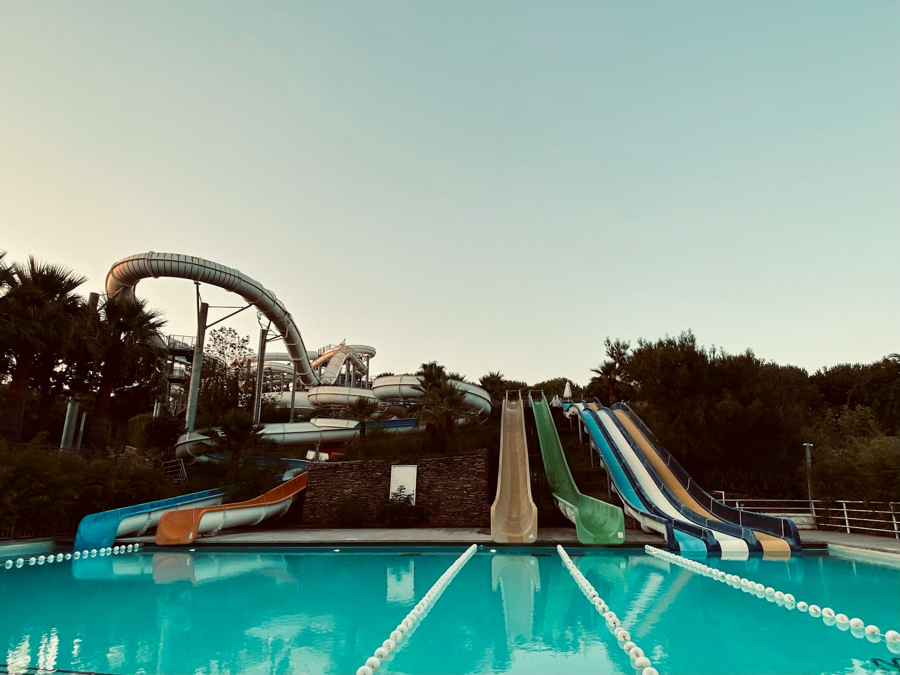

Attractions in Galveston
Moody Gardens

Photo by Kishan Modi on Unsplash
Established by the moody foundation this area includes a golf course, hotel and and a recreational area that educates and promotes preservation of nature and wildlife. Various festivals and arrangements are also being held on these grounds.
Galveston Beaches
Photo by Cayetano Gil on Unsplash
Galveston has many different beaches to visit along the 32 miles of Gulf of Mexico coastline. Whether you are a family looking for calm waves or a group of friends looking for a good time on the beaches galveston has the beaches for you
Schlitterbahn Waterpark
Photo by Cemre Pacun on Unsplash
This Waterpark and retreat has two locations in Texas. you will find what you expect from a waterpark in every sense. Lazy rivers, slides of various sizes and a range of cabins and hotel rooms to chose between. It is also open all year.